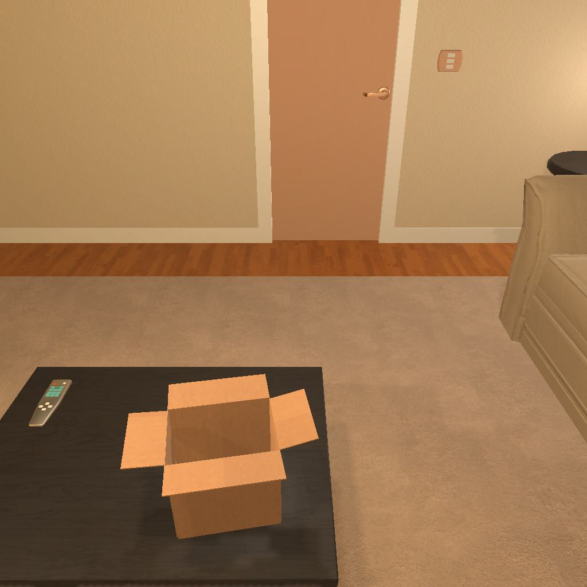

---------------------------------------------------------task: 7---------------------------------------------------------
--------------------------------------------------------------------------------------------------------------------------------------------------------------------
--------------------------------------------------------------------------------------------------------------------------------------------------------------------
Step:--------------------------------------------------------------------------12-------------------------------------------------------------------------------
----------------------------------------
VLM Prompt:
Image1:
Image2:
**Instruction**
1. Analyze the provided images to identify all visible household objects and compare the difference between images (e.h. whether the object is opened or not and taken on hand or not), focusing on those relevant to the task description "put a creditcard in coffeetable."
2. Use the analysis of images and the task hint "The agent must find an object of the desired type, pick it up, find the correct location to place it, and put it down there." to answer the question: what is the most reasonable action in the choices for the task description "put a creditcard in coffeetable"?
3. Decide and write the answer using the template: The answer is: (i): , where i is the real number. If there is no desired object in images, search every place based on **Initial Observation** to find the object. And if no one is exactly correct, choose a similar answer.
**Initial Observation**
You are in the middle of a room. Looking quickly around you, you can see armchair (1-2), dresser (1), garbagecan (1), cabinet (1-4), drawer (1-4), coffeetable (1), sidetable (1), sofa (1)
**Answer Choices**
(1): go to armchair 1
(2): go to armchair 2
(3): go to dresser 1
(4): go to garbagecan 1
(5): go to cabinet 1
(6): go to drawer 2
(7): go to cabinet 2
(8): go to drawer 3
(9): go to cabinet 3
(10): go to drawer 4
(11): go to cabinet 4
(12): go to sidetable 1
(13): go to sofa 1
(14): take box 1 from coffeetable 1
(15): take remotecontrol 1 from coffeetable 1
(16): take lightswitch 1 from coffeetable 1
(17): examine coffeetable 1
**Answer**
Let's think step by step by following the instructions.
----------------------------------------
----------------------------------------
Original Response:
First, we analyze the provided images. In Image 1, we can see a gold statue and a credit card on the floor near the window. In Image 2, we see a coffee table with a cardboard box and a remote control on it. There are no other household objects visible in the images that are relevant to the task description "put a credit card on the coffee table."
Now, using the analysis and the task hint, we must find the credit card, pick it up, find the coffee table, and put the credit card down there. Since the credit card is visible in Image 1, we know its location. The coffee table is visible in Image 2.
Based on the initial observation, we are currently in the middle of the room, and the coffee table is mentioned as one of the objects in the room. Therefore, the most reasonable action to complete the task description is to pick up the credit card and put it on the coffee table.
However, looking at the answer choices, there isn't an option to pick up the credit card from the floor. The closest action we can take that aligns with our task is to examine the coffee table, which may lead to the next steps required to place the credit card there.
The answer is: (17): examine coffeetable 1.
----------------------------------------
----------------------------------------
>>> Refine Original VLM Response and Get Pure Action: examine coffeetable 1
----------------------------------------
-----------------------------------------------------------------
Running time: 10.337513446807861 seconds
Total Money: 2.872100000000001
-----------------------------------------------------------------
-----------------------------------------------------------------
Text Observation:On the coffeetable 1, you see a box 1, a remotecontrol 1, and a lightswitch 1.
-----------------------------------------------------------------
UNSUCCEED